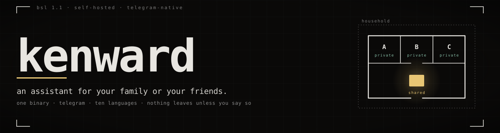

kenwardFor your family, or your friends. Each person’s memory is actually their own.
Self-hosted, on a machine you already own. Everyone talks to it through Telegram — privately, or in the group you all share.
What you tell it privately stays private. What the group teaches it, the group shares.
That boundary is separate stores, separate keys and separate processes — not a
WHERE user_id = clause you have to take on faith.
It uses whichever of your machines is awake. A cloud provider only if you add one.
// 00the gap it fills
Most assistants are built for one person.
Add a second person to one of those and you get one of two bad outcomes: a single shared brain that leaks everyone’s private context into everyone else’s conversations, or separate installs that share nothing at all.
A household wants both halves. It wants the assistant to know that Tuesday is bin day and that the boiler code is 4471 — and not to tell your brother what you asked it last night. kenward is built for that case from the start.
// 01the memory model
Two kinds of memory, and one direction between them.
Private memory is what the assistant knows about you: preferences, ongoing concerns, the shape of your week. A lore space with two members — you and the node.
Shared memory is what the household knows together: logistics, plans, decisions anybody should be able to recall. A lore space with everyone in it.
- reads and writes
- reads only
Private conversations can read shared memory — you should be able to ask when the bins go out. Group conversations can never read private memory. Moving something from a private space to the shared one shows you the full text first.
And nothing is written to memory without you being told. A note to your own private memory is written first and then shown to you in full — the exact words and the space they went to — with an Undo button that removes it. Anything going to the household's shared memory is shown to you first and written only if you say yes, because other people will have read it by the time you regret it.
— what kenward itself says, in both modes
// 02two modes, one binary
The setup question is about trust, not topology.
You pick a mode once, during setup, by answering one question: does everyone here trust whoever runs this machine to be able to read their private conversations? A non-technical installer can answer that. Nobody can answer “do you want per-user pods?”, and the pods are a consequence of the answer rather than the decision.
-
Simple
One process. Everyone’s memory separated, every key in one place.
What this mode does NOT do is seal anything against whoever runs this machine. All members' keys live in one process here, and one bot token carries every conversation, so the person operating this computer can read every member's private memory — on the disk, and in flight on its way to and from Telegram. For most households that is fine — it is your own family machine, and you already trust whoever set it up.
-
Isolated
One pod per person. Each holding only its own key, and its own bot.
Your assistant runs in its own process, with its own key and its own Telegram bot. Nobody else in the household can read your private memory, and neither can the person who runs this machine — not from the disk, not from a backup, and not before your process has been unlocked.
Both quoted verbatim from what kenward doctor prints.
| Property | Simple | Isolated |
|---|---|---|
| Process model | one process | one pod per member |
| Keys | one address space | per-pod, argon2-wrapped |
| Telegram | one household bot | one bot per member |
| Runs on | Windows, macOS, Linux, container | Linux with Podman or Docker |
| The operator can read your private memory | yes | no — not from the disk, not from a backup, and not before your process has been unlocked |
The assistant, the memory policy and the routing are identical in both modes. Only the supervisor differs. Isolated mode is not a paid tier — it is the mode that makes the privacy claim true.
// 03what it does
Six things, and nothing for members to install.
Members need no client software beyond Telegram, which they already have.
-
Ten languages
Arabic, Catalan, Chinese, Dutch, English, French, German, Italian, Portuguese and Spanish. Each written out by hand, down to Arabic’s bidirectional isolates.
-
Remembers, and says so
Every write is announced in your own language, with the exact words and where they went, and an Undo button behind a real delete. No setting makes a write silent.
-
Reminders
A reminder is text and a time to send it. At the time, you get exactly that text: nothing generated, no model consulted. A node that was asleep delivers late and says it was late.
-
A group chat that stays quiet
In the household group, kenward answers only when addressed. It records the rest of the conversation without speaking into it.
-
Runs on whatever is awake
Each conversation declares which machines it may use, in order. One that is powered off is skipped in about two seconds. When the list runs out kenward refuses rather than reaching further, and no setting changes that.
-
A wizard in the browser
An admin dashboard that sets the household up without a terminal: install, account, Telegram, endpoints, trust. Bound to loopback unless you say otherwise.
// 04install
One binary, then two questions.
The script picks the right build for your machine, checks it against the published
SHA-256, installs it, and offers to set up the systemd unit. macOS runs the same line.
Windows downloads the .exe.
$ curl -fsSL https://raw.githubusercontent.com/BlueHeisenberg/kenward/main/install.sh | sh
$ kenward setupSetup asks two questions. The trust question above, which chooses the mode; and whether the household wants one assistant or one each. The second is about presentation, not security.
$ kenward invite --name "David" # single-use, expires in 24h
$ kenward doctor # config, memory, transport, every endpoint
$ kenward dashboard # the browser wizard, on loopbackUntil an invited member sends their code, the bot does not reply to them at all — not an error, not a prompt, silence. A bot username is publicly discoverable, and any reply would tell a stranger something is here. INSTALL.md has the full procedure.
// 05where the claim stops
The honest limit, stated once.
kenward has to see your words in plain text to answer them, and it is the second member of your private space. That is the price of an assistant that answers when your laptop is shut. Someone with root access to this machine, while your assistant is running, could reach your key. There is no way around that for any assistant that runs on a server and answers questions — what changes is that reaching it means deliberately attacking your own household, rather than opening a file.
— verbatim, from what isolated mode itself prints
- Your key stays unwrapped while your process runs. Your passphrase goes to your own process at startup and never travels over Telegram. Once unlocked, the key stays in that process’s memory until it stops or you lock it.
- In Simple mode the operator can read everything — every member’s private memory, at rest and in flight. That is the mode’s known limitation, not a bug.
- A delete is a tombstone, not a shred. Undo stops an entry coming back from search and from get, here and on every synced device. The row is still on the disk. Unpublishing is not the same as never having published.
- The privacy differentiator is a property of self-hosting. Isolated mode on somebody else’s infrastructure seals nothing against that somebody else.